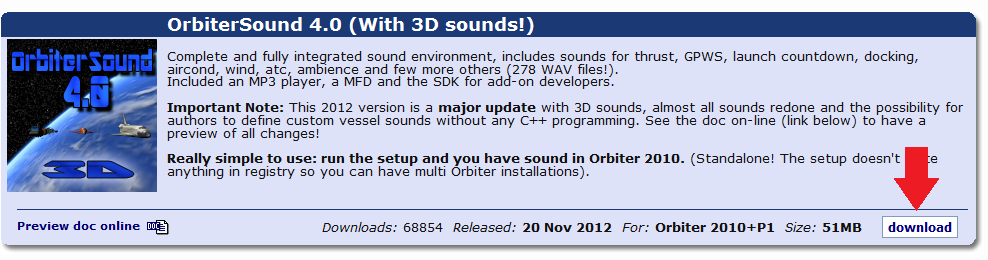
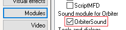
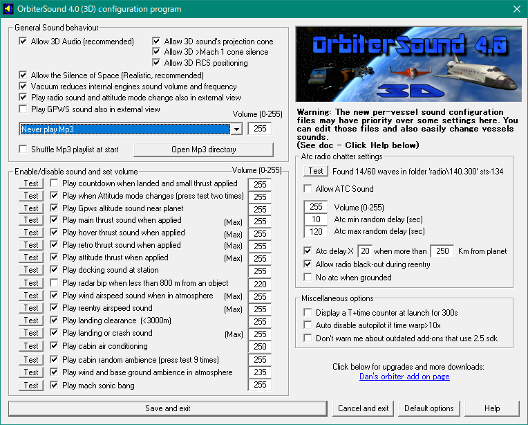
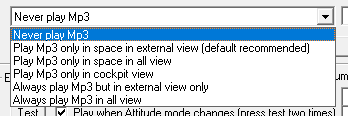
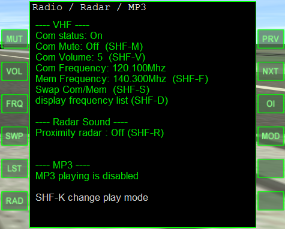

OrbiterSound 4.0は、Orbiter2010で音声を再生するためのMODです。
ダウンロードは以下のリンクから。

DirectXのランタイムを導入していない場合は、事前にインストールしておくこと。
ダウンロードしたファイルをダブルクリック。
Browseボタンをクリックして、Orbiterがインストールされているフォルダを指定する。
下のInstallボタンをクリックすると、自動でインストールされる。

インストールが終了したら、Orbiterを起動する。
LaunchpadのModulesタブを開いて、OrbiterSoundにチェックを入れる。
初回起動時のみ、ゲーム中にOrbiterSoundのメッセージが表示される。
space（スペース）キーを押すとこれを消すことができる。

Orbiterのインストールフォルダにある、SoundConfig.exeをダブルクリック。
OrbiterSoundの主な設定はここで変更できる。
チェックを入れる・外すと有効・無効を切り替えられる。
Testをクリックすると、どのような音声が再生されるか確認できる。
Volumeのボックスに数字を入力して音量を設定する。
下のSave and exitをクリックすると、設定を保存して終了する。
| Save and exit | 設定を保存して終了 |
| Cancel and exit | 設定を保存せずに終了 |
| Default options | 初期設定に戻す |
| Allow 3D Audio (recommended) | 3Dオーディオを有効にする（推奨） |
| Allow 3D sound's projection cone | 円錐状の音の広がりを有効にする |
| Allow 3D >Mach 1 cone silence | 超音速での無音化を有効にする |
| Allow 3D RCS positioning | RCSの噴射音を3Dで再現する |
| Allow the Silence of Space (Realistic, recommended) | 宇宙空間では無音にする（現実的・推奨） |
| Vacuum reduces internal engines sound volume and frequency | 真空中では船内で聞こえるエンジン音を小さくする |
| Play radio sound and attitude mode change also in external view | ATCの音声とRCSの噴射音を機外視点でも再生する |
| Play GPWS sound also in external view | GPWS（地上接近警報）を機外視点でも再生する |
| Shuffle Mp3 Playlist at start | mp3のプレイリストをシャッフルする |
ドロップボックスでは、BGMとして再生されるmp3ファイルについて設定できる。
下のOpen Mp3 directoryボタンをクリックすると、mp3ファイルが保存されているフォルダを開く。

| Never play Mp3 | mp3音源を再生しない |
| Play Mp3 only in space in external view (default recommended) | 宇宙空間かつ機外視点でのみmp3を再生する（初期設定・推奨） |
| Play Mp3 only in space in all view | 宇宙空間では機内・機外視点の両方でmp3を再生する |
| Play Mp3 only in cockpit view | 機内視点でのみmp3を再生する |
| Always play Mp3 but in external view only | 機外視点でのみmp3を再生する |
| Always play Mp3 in all view | すべての視点でmp3を再生する |
特定の効果音を有効・無効にする。
Testをクリックした回数に応じて、異なる音声が再生される。
| Play countdown when landed and small thrust applied | 着陸時にエンジンを点火すると、打ち上げカウントダウンを再生する |
| Play when attitude mode changes (press test two times) | RCSのモード切り替え |
| Play Gpws altitude sound near planet | 地表からの高度を音声で通知する (GPWS) |
| Play main thrust sound when applied | メインエンジンの噴射音を再生する |
| Play hover thrust sound when applied | ホバーエンジンの噴射音を再生する |
| Play retro thrust sound when applied | 逆噴射エンジンの噴射音を再生する |
| Play attitude thrust when applied | RCSの噴射音を再生する |
| Play docking sound at station | ドッキング音を再生する |
| Play radar bip when less than 800 m from an object | 宇宙船などに接近したとき(<800m)にレーダーのビープ音を再生する |
| Play wind airspeed sound when in atmosphere | 大気圏内を飛行中に風切り音を再生する |
| Play reentry airspeed sound | 再突入時に大気との接触で出る音を再生する |
| Play landing clearance (<3000m) | 高度3000mを切ったときに、着陸許可を告げる音声を再生する |
| Play landing or crash sound | 着陸・不時着時に効果音を再生する |
| Play cabin air conditioning | 機内視点で空調音を再生する |
| Play cabin random ambience (press test 9 times) | 機内視点でランダムに効果音を再生する |
| Play wind and base ground ambience in atmosphere | 着陸時に風の音や基地の効果音を再生する |
| Play mach sonic bang | ソニックブームを再生する |
地上と宇宙船との通信音声をランダムに再生する。
再生される音声はゲーム内の状況とは関連しない。
Atc *** random delay (sec)で、音声が再生される間隔を設定する。
| Allow ATC Sound | ATCのランダム再生を有効・無効にする |
| Atc delay X ** when more than *** Km from planet | 惑星から***km離れた時に、ATCの通信間隔が**倍になるようにする |
| Allow radio black-out during reentry | 再突入時の通信途絶を再現する |
| No atc when grounded | 着陸時にはATC音声を再生しない |
| Display a T+time counter at launch for 300s | 打ち上げからの経過時刻を画面左下に表示する（300秒まで） |
| Auto disable autopilot if time warp >10x | 10倍以上のタイムワープを使用すると、オートパイロットを自動で解除する |
| Don’t warn me about outdated add-ons that use 2.5 sdk | バージョン2.5のOrbiterSound を使用する古いMODについて警告しない |
Orbiter\Sound\cfgフォルダを開く。
Editable_Advanced_Configuration.cfgをメモ帳などのテキストエディタで開く。
PlayWhenOrbiterInBackgroundをTrueにすると、バックグラウンドでも音声を再生し続けるようになる。

MFDの選択画面でRadio/mp3 Panelを選択すると、 Radio / Radar / MP3 MFDを開く。
このMFDから、ATC、レーダーのビープ音、mp3の再生について設定できる。
このMFDでの変更は保存されない。
変更を保存したいときは、SoundConfig.exeを使う。
| MUT | ATCの通信音声を有効・無効にする |
| VOL | ATCの音量を設定する |
| FRQ | ATCの周波数を入力する |
| SWP | ATCの周波数を切り替える |
| LST | 使用可能なATC周波数の一覧を表示する |
| RAD | レーダーのビープ音を有効・無効にする |
| PRV | プレイリストからひとつ前の曲を選択 |
| NXT | プレイリストから次の曲を選択 |
| OI | mp3の再生を有効・無効にする |
| MOD | 再生モードの切り替え |
OrbiterSound では、.m3u形式のプレイリストを使用できる。
ここでは、Windows Media PlayerとiTunesを使って.m3uファイルを作成する方法について説明する。
曲かアルバムを右クリックして、追加→プレイリストを選択。
ウィンドウの右上、リストの消去のとなりのリスト オプションをクリック。
リストに名前を付けて保存をクリック。
開いた画面で、Orbiter\Sound\mp3フォルダに移動する。
ファイル名をorbitersound_playlist.m3uにする。
ファイルの種類をM3U プレイリストにして保存する。
もとのorbitersound_playlist.m3uを残しておきたいときは、バックアップを取っておくこと。
Windows Media Playerで作成される.m3uファイルは相対パスとなっている。
このため、Orbiterのインストールフォルダを移動させるとプレイリストが使えなくなることがある。
プレイリストに追加→新規プレイリストでorbitersound_playlistという名前のプレイリストを作成する。
ファイル→ライブラリ→プレイリストを書き出すを選択。
ファイルの種類でM3Uファイルを選択して、拡張子を.m3uにして保存する。
作成したファイルをメモ帳などのテキストエディタで開く。
名前を付けて保存で文字コードをANSIにして上書き保存する。
完成したorbitersound_playlist.m3uをコピーする。
Orbiter\Sound\mp3フォルダに貼り付けて上書きする。